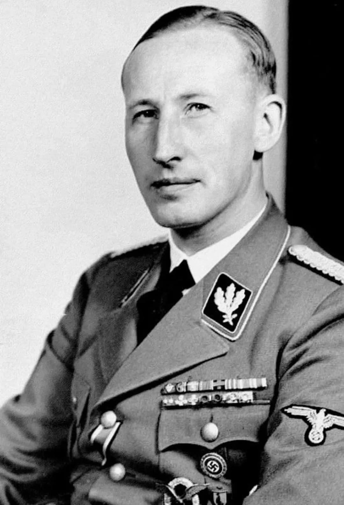

Reinhard Heydrich (1904–1942) est l’un des dirigeants les plus puissants et les plus craints du régime nazi. Chef du RSHA (Gestapo, SD, Einsatzgruppen), il joue un rôle central dans la mise en place de la politique d’extermination des Juifs d’Europe.
Sa brutalité en Bohême-Moravie lui vaut le surnom de « boucher de Prague ».
Le 20 janvier 1942, Heydrich préside la conférence de Wannsee, réunion où sont définis les aspects administratifs de la Solution finale.
Il impose la déportation et l’extermination systématique des Juifs d’Europe.
Nommé Protecteur adjoint, Heydrich impose :
Cette brutalité conduit le SOE britannique et le gouvernement tchécoslovaque en exil à lancer l’opération Anthropoïde.
Le 27 mai 1942, Heydrich est attaqué à Prague par Jan Kubiš et Jozef Gabčík.
Blessé par l’explosion d’une grenade, il meurt le 4 juin 1942. Sa mort entraîne des représailles nazies massives, dont la destruction de Lidice.
Heydrich est considéré comme l’un des principaux architectes de la politique génocidaire nazie. Les lieux liés à son action et à son assassinat sont aujourd’hui des sites de mémoire.